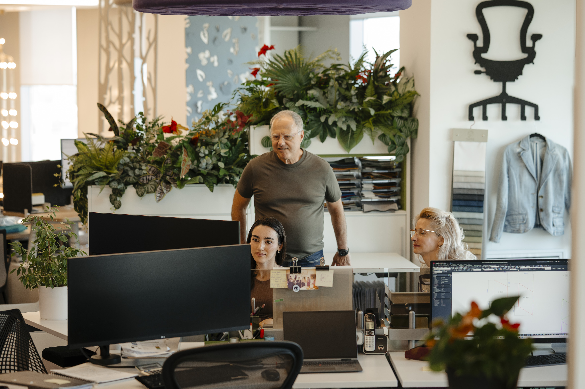
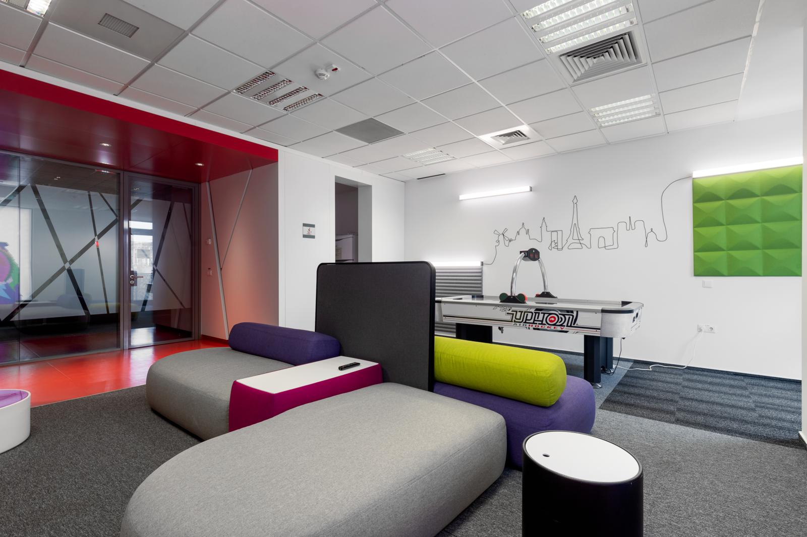

Press coverage, interviews, and market signals around Workspace Studio.
Media appearances, interviews, and business coverage featuring Workspace Studio.

Workspace design becomes a core leasing strategy as landlords compete on quality.
An English-language market feature on how better office design is shaping leasing decisions.
Read on CIJ
Office fit-out in Bucharest costs an average of 1,077 euro per square meter.
A cost benchmark showing Bucharest remains 15-18 percent more affordable than Warsaw and Prague.
Read on TermeneHoratiu Didea on the major geopolitical and financial challenges of 2026.
A Forbes Romania perspective on the lessons, risks, and priorities shaping the next business year.
Read on Forbes Romania
How will 2026 look? Business leaders weigh in on the year ahead.
Workspace Studio joins a multi-voice outlook on business expectations and workplace priorities.
Read on Business Magazin
What Romanian business leaders promise themselves for the new year.
A cover story on leadership resolutions, decision-making discipline, and business momentum.
Read on Business Magazin
Horatiu Didea expects a difficult year with fewer new office deliveries.
A 2026 outlook on lower volumes, fit-out demand, and pressure across the office market.
Read on Termene
How work models evolved inside Romanian companies in 2025.
A Ziarul Financiar feature on hybrid work, office return, and changing workspace expectations.
Read on ZF
The future of work has arrived.
A Forbes Romania feature on the workplace shifts already visible in company strategy and office design.
Read on Forbes Romania
Hybrid work, office return, and workspace transformation in Romania in 2025.
A business overview of how companies adapted their work formulas and office environments.
Read on Aleph Business
Quality office spaces become essential as global tech leaders raise the bar.
A video interview with Horatiu Didea on premium cafeterias, lounges, and the future of office investment.
Watch on Profit
Companies postpone office fit-outs while waiting for a stronger market moment.
Coverage of the ZF entrepreneur interview on caution, demand, and investment timing.
Read on Office TrendsHoratiu Didea on the office fit-out market in ZF 15 Minutes with an Entrepreneur.
A short-form business interview about timing, client decisions, and market confidence.
Read on ZF
Offices become a natural extension of personal space.
A point of view on comfort, personalization, and the new expectations employees bring to work.
Read on Agenda Constructiilor
Companies spend more on relaxation spaces as they bring employees back to the office.
A real estate feature on how office investment is moving toward social and hospitality-inspired areas.
Read on Wall-Street
The era of human relationships puts company success in connection.
A cover story on the role of human connection in leadership, work culture, and business performance.
Read on Business MagazinHoratiu Didea on the career bridge that shaped his professional path.
A ZF career interview with Workspace Studio's managing partner.
Read on ZF
A focus on quality and ergonomics grew Workspace Studio's business in 2024.
Coverage of how stronger demand for high-quality office fit-outs supported the company's growth.
Read on AngajatorulMeu
Workspace Studio reached 27 million euro in revenue in 2024.
Business coverage of the company's 2024 results and its position in office design and fit-out.
Read on Economedia
Workspace Studio fitted out more than 100,000 square meters of modern offices in 2024.
A Forbes Romania business story on project volume, modern office demand, and Workspace Studio's 2024 results.
Read on Forbes Romania
2024 is defined by budget-centred design, not lower design ambition.
A strategic point of view on how companies balance cost discipline with better workspace decisions.
Read on Nine O'Clock
Ergonomics and design budgets increased by around 20 percent.
A market read on redesign costs, office quality, and what companies are prioritizing now.
Read on News.ro
Workspace Studio expands operationally through a major logistics investment.
A growth story that moves beyond design and into the infrastructure behind delivery quality.
Read on Forbes Romania
Horatiu Didea says a modern office is now seen as an investment in employees.
Interview on how office spending is increasingly tied to wellbeing and retention.
Read on AngajatorulMeu
Office interior fit-out costs continue to evolve as companies rethink workplace quality.
A market look at pricing, redesign pressure, and the new realities of office investment.
Read on New Money
Ergonomics and design investments are up by approximately 20 percent in 2024.
A business-facing read on how office quality remains a priority even in tighter budget cycles.
Read on Revista Biz
Business Review tracks the 20 percent rise in ergonomics and design investment.
An English-language business press take on office redesign spending and market direction.
Read on Business Review
About 70 percent of revenue now comes from redesign projects, not new office builds.
A leadership interview focused on reconfiguration, market shifts, and business resilience.
Read on Forbes Romania
A new word in the business agenda: human.
A broader leadership conversation around people-first work environments and office expectations.
Read on Business Magazin
Horatiu Didea on what Workspace Studio expects from the office market next.
A short entrepreneur-format interview about current market pressure and growth expectations.
Read on ZF
Office trends in 2024 point to redesigns and stronger design impact.
A concise look at how companies are upgrading offices to support hybrid work and employer image.
Read on AngajatorulMeu
Employees today seek more than just a workspace in the post-beige office era.
An English-language interview about expectations, culture, and the visual future of the office.
Read on Romania Insider